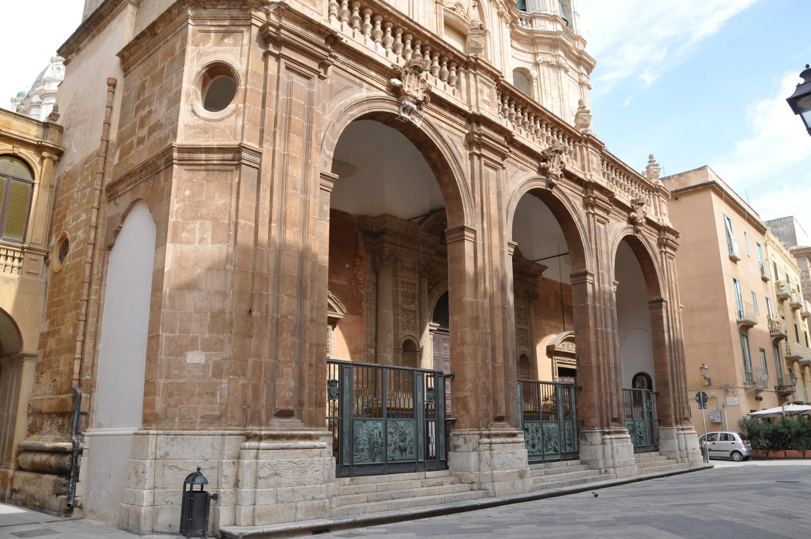
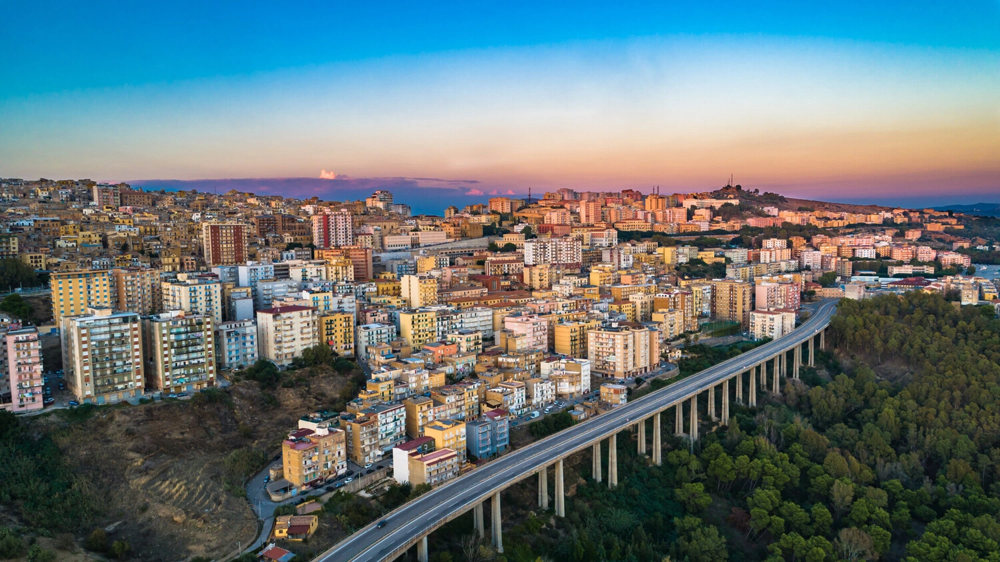
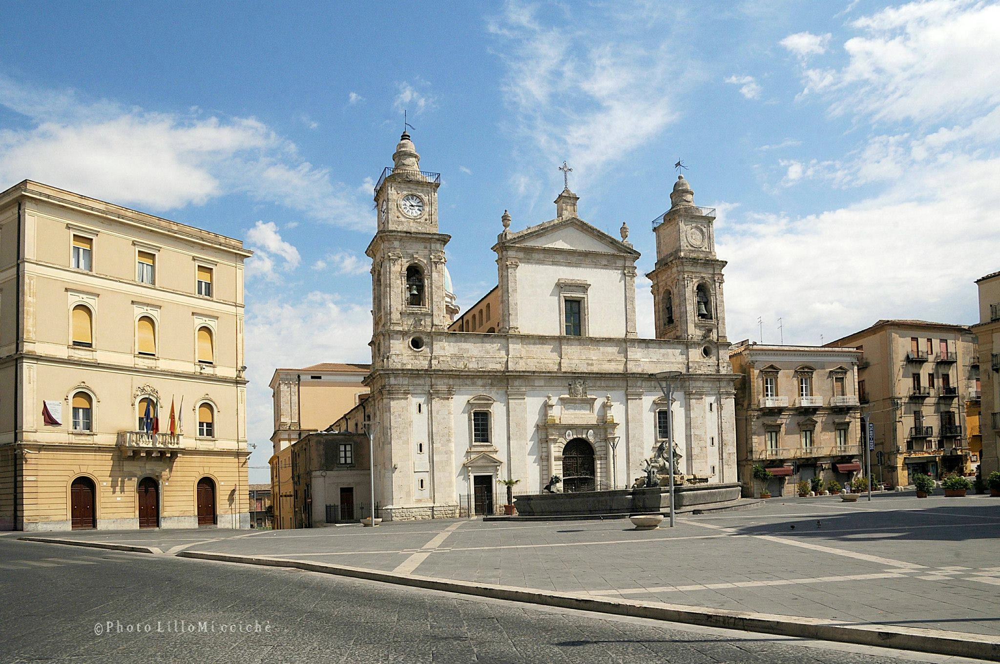
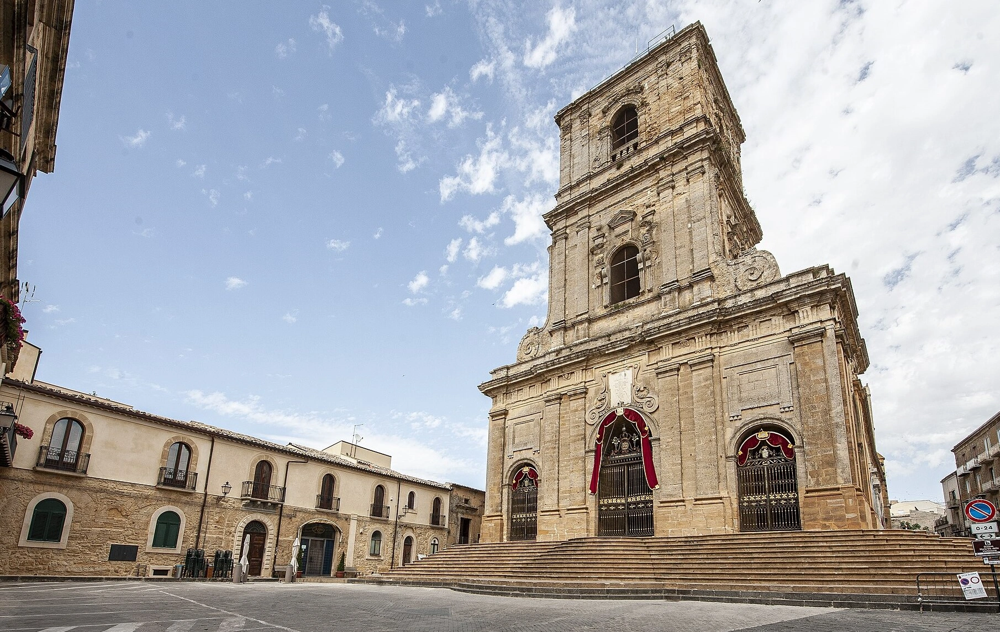

Trapani


Agrigento sorge su una collina che domina la costa meridionale della Sicilia, celebre in tutto il mondo per la Valle dei Templi, uno dei siti archeologici greci meglio conservati al mondo e Patrimonio UNESCO. Il suo centro storico medievale racchiude chiese, palazzi e una vivace vita culturale.
Piazza Don Minzoni è il salotto del centro storico di Agrigento, cuore della vita civile e religiosa della città. Si affaccia sulla Cattedrale di San Gerlando e costituisce il punto di partenza ideale per esplorare il dedalo di vicoli storici e le bellezze artistiche della città dei templi.

L'imponente chiesa madre della città, caratterizzata da una navata dalla straordinaria acustica acentrica. Costruita in epoca normanna e modificata nei secoli, domina la collina dell'antico nucleo storico.
Via Duomo, 92100 Agrigento AG
Un moderno spazio espositivo che custodisce e valorizza il ricco patrimonio artistico e religioso della diocesi agrigentina, offrendo un percorso attraverso dipinti, argenti sacri e paramenti liturgici.
Via Duomo, 96, 92100 Agrigento AG


Una prestigiosa biblioteca storica fondata nel Settecento. I suoi affascinanti scaffali lignei conservano decine di migliaia di volumi antichi, incunaboli e manoscritti di inestimabile valore culturale.
Via Duomo, 94, 92100 Agrigento AG
Un locale caldo e accogliente nel cuore del centro storico, dedicato alla cultura del vino. Offre una vasta e curata selezione di etichette regionali, accompagnate da taglieri di prodotti tipici locali.
Piazzetta San Calogero, 11, 92100 Agrigento AG


La strada più animata di Agrigento, conosciuta come il 'salotto della città'. Un asse viario elegante e tortuoso, perfetto per lo shopping, fiancheggiato da boutique, caffè e palazzi storici.
Via Atenea, 92100 Agrigento AG
Il principale teatro agrigentino, un gioiello ottocentesco dall'elegante architettura interna. Dedicato all'illustre drammaturgo locale, ospita regolarmente una ricca stagione di prosa, concerti ed eventi culturali.
Piazza Luigi Pirandello, 35, 92100 Agrigento AG


Trapani

Caltanissetta

Enna